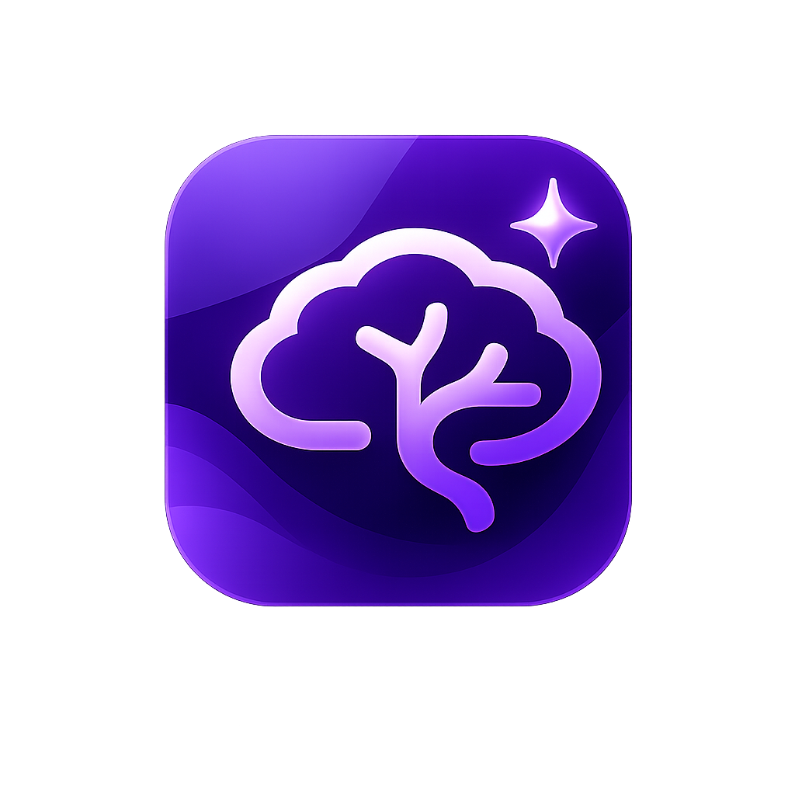

Gestão de pacientes
Organize informações clínicas, dados de contato, histórico e acompanhamento em um ambiente estruturado.

WorkMind PSIBaixe a versão oficial da WorkMind PSI, uma plataforma criada para psicólogos que precisam organizar pacientes, documentos, triagens, recursos clínicos e acompanhamento com mais clareza, segurança e elegância.
A WorkMind PSI reúne recursos essenciais para facilitar a organização do atendimento psicológico, reduzir retrabalho e deixar o acompanhamento mais claro para o profissional.
Organize informações clínicas, dados de contato, histórico e acompanhamento em um ambiente estruturado.
Gere documentos clínicos, contratos e materiais com visual profissional e identidade consistente.
Use fluxos digitais para coletar informações, orientar pacientes e receber arquivos de acompanhamento.
Conte com questionários, entrevistas, checklists e instrumentos de apoio organizados por finalidade.
Envie mensagens com modelos prontos, organize orientações e facilite o contato com pacientes.
Centralize tarefas e informações importantes para tornar a prática clínica mais objetiva e produtiva.
Siga este passo a passo para instalar a WorkMind PSI com segurança no computador.
Clique no botão “Baixar WorkMind PSI” e aguarde o download do arquivo de instalação.
Abra o instalador no Windows. Se aparecer um aviso de segurança, confirme que deseja executar o arquivo baixado da página oficial.
Siga as etapas do instalador até concluir. Depois, abra a WorkMind PSI pelo atalho criado no computador.
Na primeira abertura, informe sua licença de acesso, quando solicitado, para liberar o uso da ferramenta.
Em caso de dúvida na instalação, licença ou atualização, entre em contato com o suporte oficial da WorkMind Global. Informe seu nome, e-mail de ativação e uma breve descrição do problema.
Falar com suporte Voltar ao download